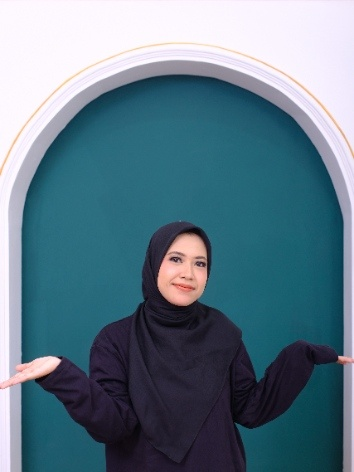

🚀WELCOME TO AISAH'S WORLD!
Tempat santai. seru-seruan dan eksperimen coding pertamaku
Ke Protofolio Aisah

✨ Siapa sih Aisah ?✨
"Belajar hal baru tiap hari, walau pelan yang penting konsisten!"
Halo semuanya! 👋 Selamat datang di sudut kecil internet milikku. Website ini aku buat murni buat tempat main-main, latihan koding HTML, sekaligus ajang unjuk gigi hal-hal yang lagi aku tekuni.
Hal-hal yang Lagi Bikin Aku Ketagihan
Beberapa hal favorit yang selalu sukses bikin hari-hariku seru:
Eksplorasi Teknologi & Koding: Lagi asyik-asyiknya ngoprek garis-garis kode HTML/CSS sampai berhasil me-render elemen di layar! 💻
- Nonton Video Hiburan: Dari klip kucing absurd sampai tontonan edukatif yang bikin mikir. 🐱
- Dengar Musik & Voice Note: Nemuin lagu pas buat moodbooster atau dengerin klip suara seru. 🎧
- Dengar Musik & Voice Note: Nemuin lagu pas buat moodbooster atau dengerin klip suara seru. 🎧
Tontonan & Hiburan Pilihan🎬
Pause sebentar dari kesibukan, tonton video singkat ini buat naikin mood kamu hari ini!
Jalur Pintas Ke Tempat Favoritku
Daripada bingung mau berselancar ke mana lagi di internet, ini beberapa tempat favorit yang sering aku kunjungi:
📺 [Buka YouTube] — Tempat berburu tutorial dan hiburan tanpa batas.
Youtube href="https://google.com"